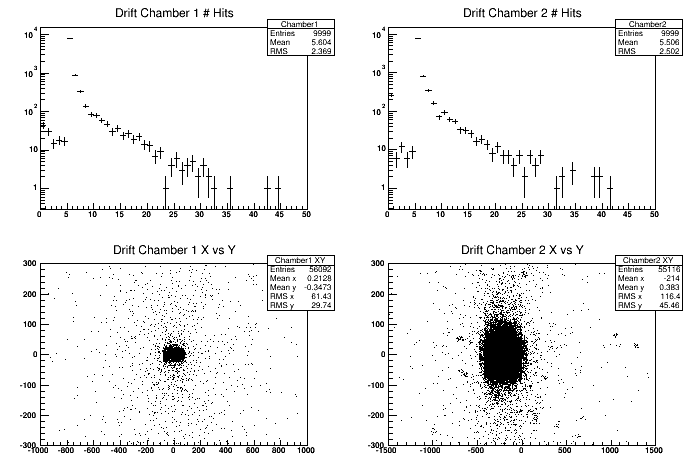
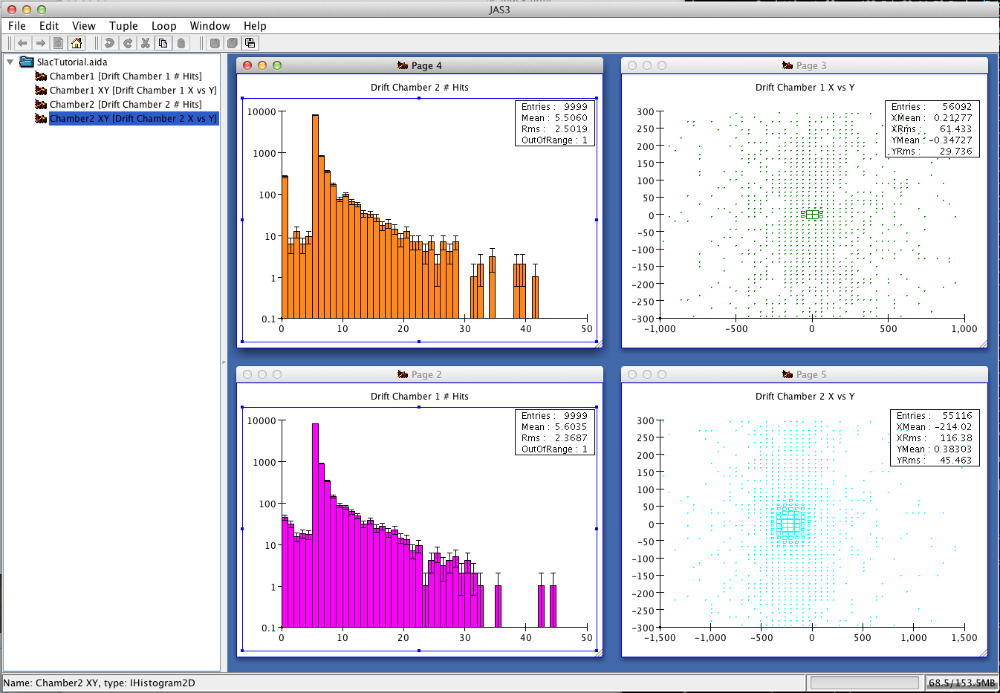
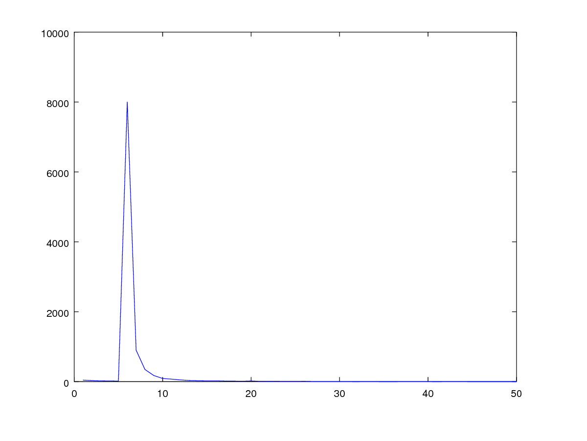
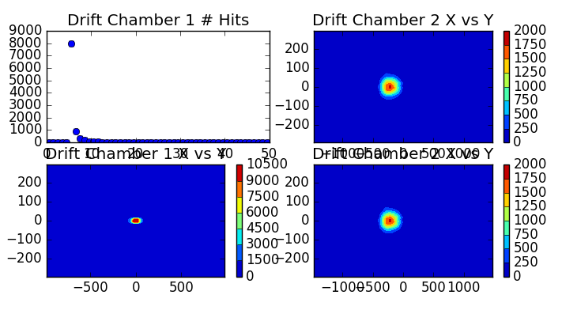

In these exercises we will use G4AnalysisManager to
store in ntuples and histograms the content of hits collections. The goal of the g4analysis module is to provide
light-weight support for simple storage of data. You need
an AIDA-compliant tool or ROOT to visualize histograms.
Alternatively at this link you can
find a simple python script that will display the CSV histograms
produced by g4analysis if you have the matplotlib python package.
If you want to use matlab/octave you can plot the 1D histograms from this tutorial with the following commands:
>> data=readcsv("Tutorial_h1_Chamber1.csv")
>> x=(1:50)
>> y=data(9:58,2)
>> plot(x,y)
|
With ROOT this is shows how histograms look like:

While this is how they look like in JAS3:

And this is how one histogram looks like in Octave:

And this is how the histograms look like in matplotlib using the provided plot_histofiles.py script:

For this tutorial the VM has installed ROOT system (not matplotlib or
octave), so we use this as the default format.
If you do not know ROOT, this is for you. Get the ROOT
plot.C
script and copy it the working directory.
To visualize histograms in ROOT type:
$ root -l plot.C
root[0] #Type ".q" to exit root
|
The plotting script relies on the histogram names and file to be the one
produced by the solution of this exercise.
Hint: Histograms are automatically merged from all worker
threads. With a concept similar to what shown in Exercise
1 Step 3 histograms are summed at the end of the run. A single
histograms file
"Tutorial.[root|xml]" exists (for CSV each histogram is written out
in a separate file, with file name "Tutorial_h{1,2}_{name}.csv"). For ntuples it makes not so much sense
the automatic merging, because what you will do for analysis is to process one file
after the other. In ROOT terminology you will create a TChain (
ITupleFactory::createChained in AIDA); with CSV format
the merging is as simple as: cat *_t*.csv > merged.csv.
For ntuples the file name format is: "Tutorial_t*.[root|xml]", for CSV the format is: "Tutorial_nt_[ntupleName]_t*.csv".
Define content of the output file(s).
Create output file(s) and define their content: four histograms and
one nutple.
- First histogram: number of hits in first arm drift-chambers.
- Second histogram: number of hits in second arm
drift-chambers.
- Third histogram: 2D histo containing X vs Y of all hits in
first arm drift chamber.
- Foruth histogram: 2D histo containing X vs Y of all hits in
second arm drift chamber.
- One ntuple containing the following data:
- Integer column: number of hits in first drift chamber
- Integer column: number of hits in second drift chamber
- Double column: energy in electromagnetic
calorimeter
- Double column: energy in hadronic calorimeter
- Double column: time on first hodscope (whatever time if
multiple hits)
- Double column: time on second hodosope (whatever time if
multiple hits)
Solution
| RunAction.cc file: |
RunAction::RunAction()
: G4UserRunAction()
{
// Create analysis manager
// Create analysis manager, set output format and file name
auto analysisManager = G4AnalysisManager::Instance();
// Default settings
analysisManager->SetDefaultFileType("root");
G4cout << "Using " << analysisManager->GetType() << G4endl;
analysisManager->SetVerboseLevel(1);
analysisManager->SetFileName("Tutorial");
// Book histograms, ntuple
//
// Creating 1D histograms
analysisManager->CreateH1("Chamber1","Drift Chamber 1 # Hits", 50, 0., 50); // h1 Id = 0
analysisManager->CreateH1("Chamber2","Drift Chamber 2 # Hits", 50, 0., 50); // h1 Id = 1
// Creating 2D histograms
analysisManager->CreateH2("Chamber1_XY","Drift Chamber 1 X vs Y",50, -1000., 1000, 50, -300., 300.); // h2 Id = 0
analysisManager->CreateH2("Chamber2_XY","Drift Chamber 2 X vs Y",50, -1500., 1500, 50, -300., 300.); // h2 Id = 1
// Creating ntuple
//
analysisManager->CreateNtuple("Tutorial", "Hits");
analysisManager->CreateNtupleIColumn("Dc1Hits"); // column Id = 0
analysisManager->CreateNtupleIColumn("Dc2Hits"); // column Id = 1
analysisManager->CreateNtupleDColumn("ECEnergy"); // column Id = 2
analysisManager->CreateNtupleDColumn("HCEnergy"); // column Id = 3
analysisManager->CreateNtupleDColumn("Time1"); // column Id = 4
analysisManager->CreateNtupleDColumn("Time2"); // column Id = 5
analysisManager->FinishNtuple(); //Do not forget this line!
}
|
Note: We book histograms and define the nutple in the constructor of the
G4UserRunAction class, however you should note that this
class is instantiated only once per job, even if multiple runs are
simulated. This means that you cannot change the content of the output
file between runs. If you think that you will do that, you can book
histograms and define columns in the ntuple in the
BeginOfRunAction method.
Open the output file at each new run.
Defining an output file and its content, it is not enough, you need
to explicitly open it. The best way to do so is to open it at the
beginning of a new run. In more complex setups where you will perform
more than one run per job, you can change the file
name at each new run (e.g. via UI commands or append the run number to
the file name), so you can produce one file output for each
run.
Solution
| RunAction.cc file: |
void RunAction::BeginOfRunAction(const G4Run* /*run*/)
{
// Get analysis manager
G4AnalysisManager* analysisManager = G4AnalysisManager::Instance();
// Open an output file
// The default file name is set in RunAction::RunAction(),
// it can be overwritten in a macro
analysisManager->OpenFile();
}
|
Write out the file.
Output files must be explicitly written to disk and closed. It is a
good idea to do that at the end of the run.
Solution
| RunAction.cc file: |
void RunAction::EndOfRunAction(const G4Run* run)
{
const Run* myrun = dynamic_cast<const Run*>(run);
if ( myrun )
{
G4int nEvents = myrun->GetNumberOfEvent();
if ( nEvents < 1 )
{
G4ExceptionDescription msg;
msg << "Run consists of 0 events";
G4Exception("RunAction::EndOfRunAction()",
"Code001", JustWarning, msg);
nEvents=1;
}
G4double em_ene = myrun->GetEmEnergy();
G4double had_ene = myrun->GetHadEnergy();
G4double shower_shape = myrun->GetShowerShape();
G4int safety = ( nEvents > 0 ? nEvents : 1);//To avoid divisions by zero
G4cout<<"Run["<<myrun->GetRunID()<<"] With: "<<nEvents<<"Events\n"
<<" <E_em>="<<G4BestUnit(em_ene/safety,"Energy")<<"\n"
<<" <E_had>="<<G4BestUnit(had_ene/safety,"Energy")<<"\n"
<<" <E>="<<G4BestUnit((em_ene+had_ene)/safety,"Energy")<<"\n"
<<" <ShowerShape>="<<shower_shape/safety<<G4endl;
} else {
G4ExceptionDescription msg;
msg << "Run is not of correct type, skypping analysis via RunAction";
G4Exception("RunAction::EndOfRunAction()","Code001", JustWarning, msg);
}
//=================================
// Exercise 3 Step 3:
// Write and close output file
// save histograms & ntuple
//
G4AnalysisManager* analysisManager = G4AnalysisManager::Instance();
analysisManager->Write();
analysisManager->CloseFile();
}
|
Fill histograms and ntuple with data.
At the end of each event you should retrieve informaiton from hits
collection and fill the histograms and ntuple objects.
You can access filled hits at the end of each event in
EventAction class.
Solution
| EventAction.cc file: |
void EventAction::EndOfEventAction(const G4Event* event)
{
G4HCofThisEvent* hce = event->GetHCofThisEvent();
if (!hce)
{
G4ExceptionDescription msg;
msg << "No hits collection of this event found.\n";
G4Exception("EventAction::EndOfEventAction()","Code001", JustWarning, msg);
return;
}
// Get hits collections
HodoscopeHitsCollection* hHC1 = static_cast<HodoscopeHitsCollection*>(hce->GetHC(fHHC1ID));
HodoscopeHitsCollection* hHC2 = static_cast<HodoscopeHitsCollection*>(hce->GetHC(fHHC2ID));
DriftChamberHitsCollection* dHC1 = static_cast<DriftChamberHitsCollection*>(hce->GetHC(fDHC1ID));
DriftChamberHitsCollection* dHC2 = static_cast<DriftChamberHitsCollection*>(hce->GetHC(fDHC2ID));
EmCalorimeterHitsCollection* ecHC = static_cast<EmCalorimeterHitsCollection*>(hce->GetHC(fECHCID));
HadCalorimeterHitsCollection* hcHC = static_cast<HadCalorimeterHitsCollection*>(hce->GetHC(fHCHCID));
if ( (!hHC1) || (!hHC2) || (!dHC1) || (!dHC2) || (!ecHC) || (!hcHC) )
{
G4ExceptionDescription msg;
msg << "Some of hits collections of this event not found.\n";
G4Exception("EventAction::EndOfEventAction()","Code001", JustWarning, msg);
return;
}
//
// Fill histograms & ntuple
//
//=================================
// Exercise 3 Step 4:
// Fill histograms & ntuple
// Get analysis manager
G4AnalysisManager* analysisManager = G4AnalysisManager::Instance();
// Fill histograms
G4int n_hit = dHC1->entries();
analysisManager->FillH1(0, n_hit);
for (G4int i=0;i<n_hit;i++)
{
DriftChamberHit* hit = (*dHC1)[i];
G4ThreeVector localPos = hit->GetLocalPos();
analysisManager->FillH2(0, localPos.x(), localPos.y());
}
n_hit = dHC2->entries();
analysisManager->FillH1(1, n_hit);
for (G4int i=0;i<n_hit;i++)
{
DriftChamberHit* hit = (*dHC2)[i];
G4ThreeVector localPos = hit->GetLocalPos();
analysisManager->FillH2(1, localPos.x(), localPos.y());
}
// Fill ntuple
// Dc1Hits
analysisManager->FillNtupleIColumn(0, dHC1->entries());
// Dc2Hits
analysisManager->FillNtupleIColumn(1, dHC1->entries());
// ECEnergy
G4int totalEmHit = 0;
G4double totalEmE = 0.;
for (G4int i=0;i<80;i++)
{
EmCalorimeterHit* hit = (*ecHC)[i];
G4double eDep = hit->GetEdep();
if (eDep>0.)
{
totalEmHit++;
totalEmE += eDep;
}
}
analysisManager->FillNtupleDColumn(2, totalEmE);
// HCEnergy
G4int totalHadHit = 0;
G4double totalHadE = 0.;
for (G4int i=0;i<20;i++)
{
HadCalorimeterHit* hit = (*hcHC)[i];
G4double eDep = hit->GetEdep();
if (eDep>0.)
{
totalHadHit++;
totalHadE += eDep;
}
}
analysisManager->FillNtupleDColumn(3, totalHadE);
// Time 1
for (size_t i=0;i<hHC1->entries();i++)
{
analysisManager->FillNtupleDColumn(4,(*hHC1)[i]->GetTime());
}
// Time 2
for (size_t i=0;i<hHC2->entries();i++)
{
analysisManager->FillNtupleDColumn(5,(*hHC2)[i]->GetTime());
}
analysisManager->AddNtupleRow();
//
// Print diagnostics: UI command /run/printProgress can be used
// to set frequency of how often info should be dumpled
//
G4int printModulo = G4RunManager::GetRunManager()->GetPrintProgress();
if ( printModulo==0 || event->GetEventID() % printModulo != 0) return;
G4PrimaryParticle* primary = event->GetPrimaryVertex(0)->GetPrimary(0);
G4cout << G4endl
<< ">>> Event " << event->GetEventID() << " >>> Simulation truth : "
<< primary->GetG4code()->GetParticleName()
<< " " << primary->GetMomentum() << G4endl;
// Hodoscope 1
n_hit = hHC1->entries();
G4cout << "Hodoscope 1 has " << n_hit << " hits." << G4endl;
for (G4int i=0;i<n_hit;i++)
{
HodoscopeHit* hit = (*hHC1)[i];
hit->Print();
}
// Hodoscope 2
n_hit = hHC2->entries();
G4cout << "Hodoscope 2 has " << n_hit << " hits." << G4endl;
for (G4int i=0;i<n_hit;i++)
{
HodoscopeHit* hit = (*hHC2)[i];
hit->Print();
}
// Drift chamber 1
n_hit = dHC1->entries();
G4cout << "Drift Chamber 1 has " << n_hit << " hits." << G4endl;
for (G4int i2=0;i2<5;i2++)
{
for (G4int i=0;i<n_hit;i++)
{
DriftChamberHit* hit = (*dHC1)[i];
if (hit->GetLayerID()==i2) hit->Print();
}
}
// Drift chamber 2
n_hit = dHC2->entries();
G4cout << "Drift Chamber 2 has " << n_hit << " hits." << G4endl;
for (G4int i2=0;i2<5;i2++)
{
for (G4int i=0;i<n_hit;i++)
{
DriftChamberHit* hit = (*dHC2)[i];
if (hit->GetLayerID()==i2) hit->Print();
}
}
// EM calorimeter
G4cout << "EM Calorimeter has " << totalEmHit << " hits. Total Edep is "
<< totalEmE/MeV << " (MeV)" << G4endl;
// Had calorimeter
G4cout << "Hadron Calorimeter has " << totalHadHit << " hits. Total Edep is "
<< totalHadE/MeV << " (MeV)" << G4endl;
}
|
Select output file format.
You can select the output file format by changing the format name of SetDefaultFileType().
Currently "csv", "hdf5", "root" and "xml" are available.
Solution
| RunAction.cc file: |
RunAction::RunAction()
: G4UserRunAction()
{
// Create analysis manager
// Create analysis manager, set output format and file name
auto analysisManager = G4AnalysisManager::Instance();
// Default settings
analysisManager->SetDefaultFileType("root");
G4cout << "Using " << analysisManager->GetType() << G4endl;
analysisManager->SetVerboseLevel(1);
analysisManager->SetFileName("Tutorial");
}
|